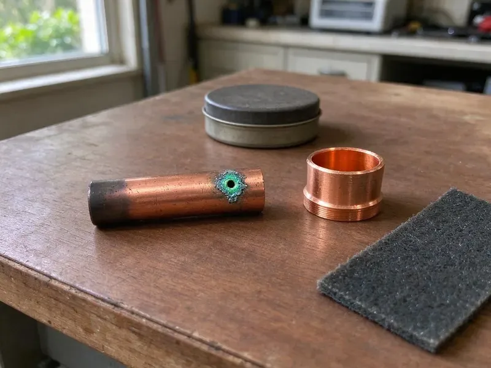

Trenchless Pipe Repair in St. Cloud, MN
Roots in the sewer line again? CNV Plumbing lines the pipe from the inside in St. Cloud, MN, so there is nowhere left for roots to get in.
- Fast Trenchless Assessments
- Minimal Yard Disruption
- No Trench Across the Yard
- Camera-Verified Results

No-Dig Pipe Repair That Lasts in St. Cloud, MN
Our crew works from small access holes, and you get camera footage when it's done.
Low-Impact Trenchless Pipe Repair in St. Cloud, MN for Sewer and Water Lines
CNV Plumbing handles the lines that are too expensive to dig up. We scope it first. The camera shows the cracks, roots and offset joints, and that footage tells us whether a liner, a sectional patch or a burst replacement will hold up best on your property.
Work we handle every week:
- Pre-lining hydro-jetting and post-install camera verification
- Pipe bursting for full replacement
- HDPE pipe fusion and bursting

Additional Plumbing Repair Services in St. Cloud, MN
We offer expert plumbing repair services across St. Cloud, MN to stop leaks, clear blockages, and keep every fixture working the way it should.


Customers
Why Choose CNV Plumbing for Trenchless Pipe Repair in St. Cloud, MN?
Our crew cleans the pipe before any liner goes in, because a liner over debris will not hold, and we record the finished line.
- Lower Total Cost, Skipping excavation and restoration often makes the final bill lower.
- Yard Stays Intact, Lining and bursting keep landscaping and concrete in place, unlike an open trench.
- Video Proof, We record the line before and after so you can see the result.
Citywide Coverage
We provide trenchless pipe repair throughout St. Cloud, including neighborhoods with mature trees and older clay or cast iron sewer lines. The equipment fits tight sites. Lining and bursting equipment works from a drive or side yard, so most sites need little more than moving a car.
Experienced Team
Our plumbers are trained and certified in CIPP lining and pipe bursting. They know local pipe. Experience with local sewer lines lets them read the footage fast and pick the method that will last, not the easiest one.
Safety-First Approach
Every trenchless repair follows local St. Cloud and state plumbing codes. We file when required. Pits get shored or sloped as needed, the work area is fenced off from kids and pets, and the finished line is inspected by camera so the repair is both safe and legal.
Trusted Certified St. Cloud Plumbing Services Professionals
At CNV Plumbing, we are proud to offer certified plumbing services throughout St. Cloud, MN. Credentials matter in this trade. Every repair, install and maintenance visit follows strict safety and quality rules, and the plumbers doing the work carry recognized industry credentials.
Call Us Now PHCC Plumbing Contractor Recognition
PHCC Plumbing Contractor Recognition Better Business Bureau (BBB) Accreditation
Better Business Bureau (BBB) Accreditation Angi Certified Pro
Angi Certified Pro ISO 9001 Quality Management Certification
ISO 9001 Quality Management CertificationTrenchless Pipe Repair in St. Cloud, MN
Cured-in-Place Pipe Lining in St. Cloud
The old pipe gets cleaned first. After that, we insert the liner. We inflate an epoxy-soaked liner against the wall and cure it with heat or UV, leaving a smooth pipe with no joints. Lining works best for cracks, root intrusion and separated joints.

Commercial Trenchless Solutions in St. Cloud
Commercial sites in St. Cloud have longer runs and more laterals. Parking lots sit on top. Trenchless repair lets schools, offices and shops keep their lots and sidewalks open, since we work through cleanouts and manholes and only cut a small pit where one is needed. We schedule around your hours.
Sewer Lateral Lining in St. Cloud
Laterals are the most common candidates for trenchless repair. Clay and Orangeburg fail often. Clay, cast iron and Orangeburg pipe crack, sag or fill with roots over time, so we jet the line clean, inspect it by camera and choose lining or bursting based on what we see. The new line restores full flow and resists roots.
Trenchless vs Traditional Costs in St. Cloud, MN
On paper, the two methods can price out close. Restoration changes that. A trench under a driveway or through an established garden means paying to replace concrete, plants and irrigation after the plumbing is done, and trenchless avoids most of those costs. We price both so you can compare.
Same-Day Sewer Assessment in St. Cloud, MN
Sewer lines that fail suddenly can often be cleared and scoped the same day. Then we schedule the fix. When lining fits, the repair gets booked fast, and until then we keep it flowing and tell you what not to send down the drain.
Trenchless vs Traditional Repair Cost in St. Cloud, MN
Per foot of pipe, trenchless can cost more than open trenching. That's not the whole bill. After adding drive, patio, landscaping and sprinkler repairs to the trench bid, trenchless usually wins on price and speed. We compare both with real numbers for your home.
Sectional Point Repair in St. Cloud
Sometimes only one joint or a few feet of pipe is bad. That calls for a sectional liner. We position a short resin-soaked sleeve over the damaged area with a camera, inflate it and let it cure, so you pay for a few feet of liner instead of the whole run. It suits isolated damage in St. Cloud laterals.

Pipe Bursting in St. Cloud, MN
Bursting is used when the old pipe is too damaged to line or needs a larger diameter. You'll see an entry and exit pit. A bursting head is pulled through, fracturing the old pipe outward while a new HDPE pipe follows behind, and that HDPE is fused into one continuous length with no joints at all.
Trenchless Sewer Repair Near You in St. Cloud, MN
Typing 'trenchless pipe repair near me' in St. Cloud, MN should get you a local crew. CNV Plumbing is one. We have lined and burst sewer laterals in neighborhoods across the area, so we usually know what pipe material to expect before the camera even goes in. It speeds up the quote.
From older homes with clay laterals to newer builds with PVC, St. Cloud has every kind of sewer line. Most are familiar to us. Our plumbers can tell from the footage whether a joint offset is small enough to line over or whether a burst is the safer choice, and they explain why on the screen.
CNV Plumbing at a Glance
- Licensed and insured plumbers serving St. Cloud, MN
- 24/7 emergency service with same-day scheduling
- Upfront, flat-rate pricing before work begins
- 4.8-star rated by 501+ Minnesota customers
St. Cloud Map
St. Cloud Information
- Population
- 71,013
- Area codes
- 320/763/952
- Service area
- St. Cloud and towns within a 40 mile drive
- Nearby
- Maple Grove, Coon Rapids, Plymouth, Brooklyn Park
Plenty of St. Cloud, MN homes have sewer lines under mature trees, pavers and driveways, and trenchless repair leaves all of that in place.
Talk to a Plumber
Call CNV Plumbing for reliable plumbing work done by licensed pros in St. Cloud, MN.
Our Specialized Plumbing Services in St. Cloud, MN
At CNV Plumbing, we handle the full list of plumbing services across St. Cloud, MN. From leak detection to full system installs, our team works fast and charges fair prices on homes and commercial properties alike. Take a look at our core services below:


How Trenchless Pipe Repair Works in St. Cloud, MN
CNV Plumbing scopes, cleans, lines and re-scopes every trenchless job in that order.
Call for a Consult
Call CNV Plumbing at (612) 712-9569 and tell us what the drains are doing. We'll set up a camera inspection.
Camera Inspection
A sewer camera goes down the line to show exactly where the damage is, with no digging.
Pick the Method
Based on the footage, we recommend lining, bursting or a sectional repair and explain the materials.
Frequently Asked Questions About Trenchless Pipe Repair in St. Cloud
Expect roughly $80 to $200 per linear foot. Pipe diameter matters. It may look pricier than a trench until you add the landscaping and concrete a dig would ruin, and the estimate follows an inspection.
Cast iron, clay, PVC and concrete can all be lined. The pipe's shape counts. If the pipe has collapsed or shifted badly, bursting may suit it better than lining, and the camera tells us which.
Much less than digging. One or two pits. With just a cleanout and a small hole or two, there's little dirt, no trench and not much restoration afterward.
Not safely. The equipment is specialized. Without the training and gear, it's easy to damage the pipe or block a lateral with a liner, so use a licensed plumber.
We do. Sewer work often requires it. Under local codes, major plumbing repairs usually need a permit, and we file it and meet the inspector for you.
Many cities want a permit for sewer replacement, trenchless included. We check the local rules and pull permits when needed.
Trenchless repair requires specialized equipment, materials and training. It should be done by an experienced contractor.
CIPP liners and resins from Perma-Liner. Prep is done with Picote cutters. Both are proven in sewer work, and every material we install meets or exceeds local plumbing code for strength and durability, which matters for a pipe expected to last decades.
Hear From Customers Who Hired Our Plumbing Experts

Robert G.
The camera showed a full break in our clay sewer line near the street. CNV Plumbing replaced it with a trenchless pipe burst, so the only digging was two small pits in the yard. They let us watch the footage before and after.
Sewer Line Replacement · St. Cloud, MN
Jessica T.
We were adding a gas range in a kitchen remodel and needed a new line run from the meter. The plumber pulled the permit, ran the pipe through the crawl space, and had it inspected and approved within the week.
Gas Line Repair · Maple Grove, MNLaura S.
Our 40 gallon tank started leaking from the bottom after thirteen years. The tech hauled the old one out, set a new unit with a fresh expansion tank, and had hot water running in about four hours. He took the old tank with him too.
Water Heater Replacement · Coon Rapids, MN
Angela D.
Our sump pump quit during a storm and the water was an inch from the basement carpet. CNV Plumbing put in a new pump with a battery backup that same evening. We have had two heavy rains since. It kicked on both times.
Sump Pump · Plymouth, MNJames P.
Our restaurant had a slow leak at the hand sink that was rotting the cabinet base. CNV Plumbing came in at six in the morning before prep, replaced the trap and both supply lines, and was packed up before my first cook clocked in.
Commercial Plumbing · St. Cloud, MNPatricia H.
We had a slab leak that two other companies could not find. CNV Plumbing located it in under an hour with a listening device. They rerouted the line through the attic instead of breaking up the floor, so we kept our kitchen tile.
Slab Leak Repair · Blaine, MN